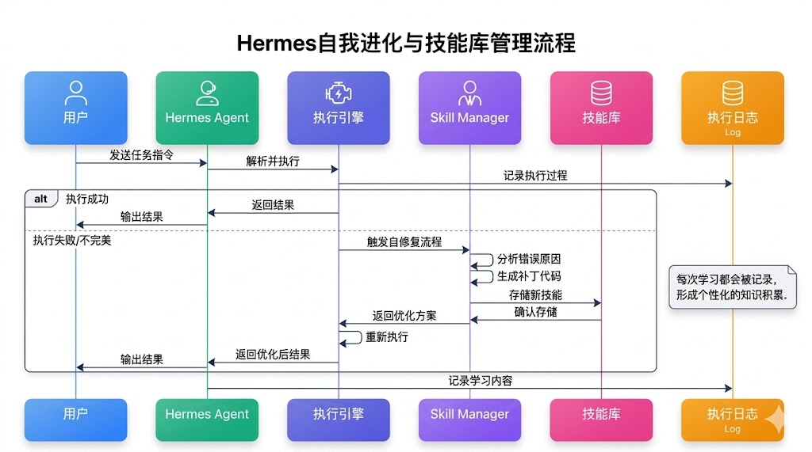
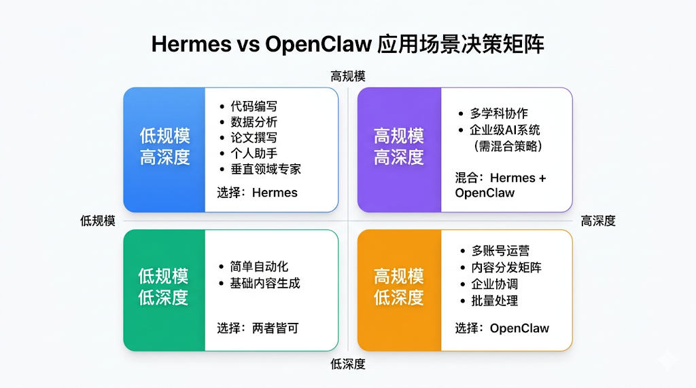
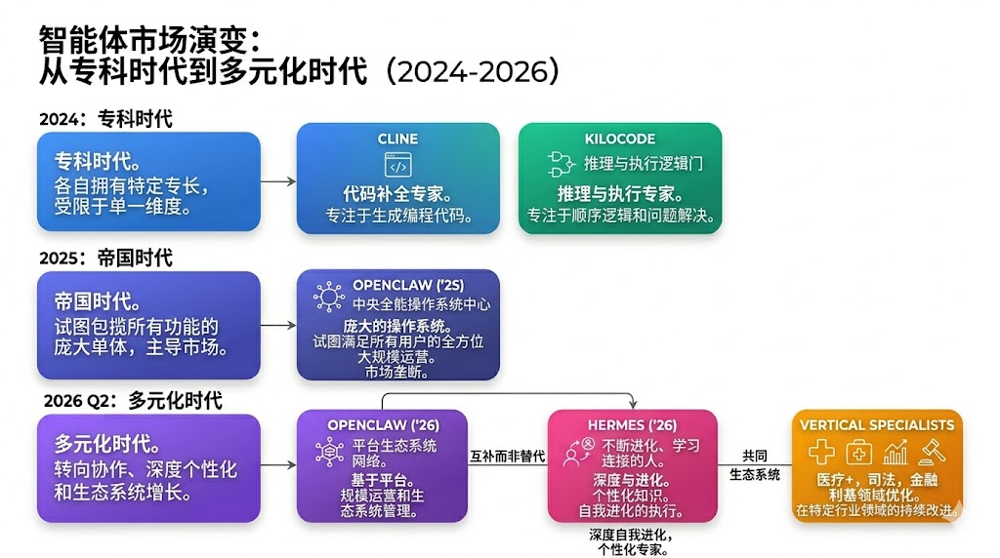
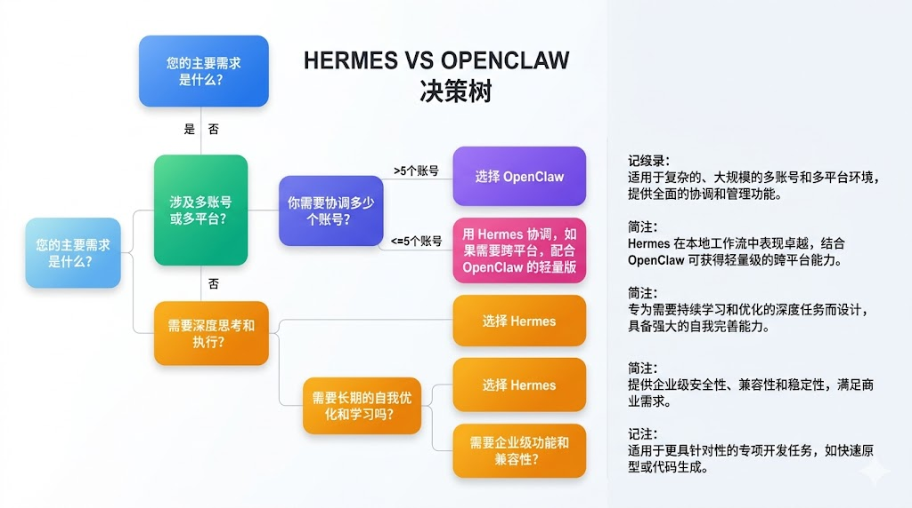
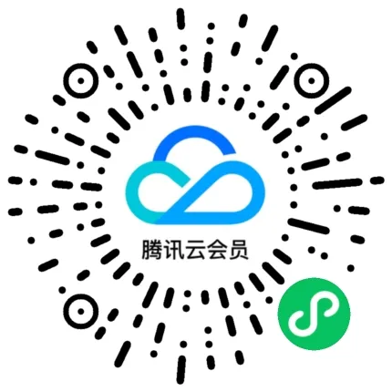
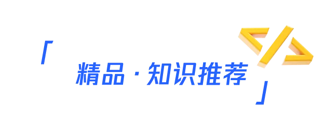

Hermes vs OpenClaw：可写运行时 vs 生态帝国，差异化共存而非你死我活
来源：微信公众号 归档日期：2026-04-21 抓取状态：成功 原文字符：14664｜配图：13 张
摘要速览
Hermes 在 7 周内从 0 冲到 84.4K GitHub 星、OpenRouter Token 消耗日榜倍速增长，市场正在重新审视 Agent 选型。这篇文章从市场叙事、Token 经济学、中国市场战略和决策树四个维度，给出实用的选型判断框架。
核心内容
- 为什么 Hermes 能逆袭：解决不同问题
OpenClaw 走"大而全"路线（企业级 OS），Hermes 走"深度聚焦"路线（可写运行时自进化）。它们不是在争同一个市场，而是各自开拓了不同的生态位。OpenClaw 的用户反馈"系统出问题太多"，Hermes 的核心优势恰好是自修复。
- 可写运行时的复合回报（Token 经济学）
处理 1000 个同类任务的对比：
- OpenClaw：每个 500 tokens，固定消耗 50 万 tokens，无积累
- Hermes：前 100 个 1000 tokens（学习），后 900 个 100 tokens（复用），总 19 万 tokens
- 第二周 Hermes 可进一步降至 15 万 tokens，OpenClaw 仍是 50 万
关键洞察：Hermes 单次消耗更高，但产生的是"可无限复用的技能资产"，长期来看具有复合回报。
- 中国市场战略：拥抱微信而非追赶 Slack
Hermes 选择优先支持微信（12 亿 MAU），使用腾讯官方 iLink Bot API（扫码即用、不易封号），而非跟随 Slack/Discord 的国际路线。这直接带来：用户基数超大、商业化链路完整（微信支付/小程序）、隐私合规有保障。风险：高频自动化仍有被风控概率，官方建议先用小号测试。
- 市场格局演变
- 2024：Cline（代码补全）vs KiloCode（多轮执行）
- 2025：OpenClaw 成绝对霸主，"大一统"格局
- 2026 Q2：Hermes 出现，开创新细分——深度执行与自我进化
- 未来：工具栈组合（Hermes 做核心逻辑 + OpenClaw 做规模运营 + Cline/KiloCode 做专科任务）
- 主要风险
- 技能库污染：次优解决方案积累后可能拉低整体质量
- 过度拟合：对某用户过度适应后，处理陌生场景能力下降
- 平台依赖：严重依赖官方 API 稳定性，政策变化影响大
- 商业化路径不清晰：3.99 美元/月的定价长期能否健康盈利待验证
可执行启发
（待补充）
我的想法
（留给你补充）
为什么有用
这篇文章提供了其他对比文章没有的两个视角：一是量化的 Token 经济学分析（复合回报模型），二是中国市场的本地化战略解读。前者帮助判断"为什么单次消耗高反而更经济"，后者解释"为什么 Hermes 在中国发展迅猛"。
具体步骤（选型决策树）
| 场景 | 推荐 |
|---|---|
| 个人开发者，提升编码效率 | Hermes（自修复天然适合代码任务） |
| 垂直领域专家，构建个人 IP | Hermes（学习你的行业知识，成为专属分身） |
| 内容创作者，管理多个账号 | Hermes（内容生产）+ OpenClaw（多平台分发） |
| 企业团队，30+ 账号 + 多人协作 | OpenClaw（权限管理、审计追踪是强项） |
| 初创企业，快速打造 MVP | Hermes + Cline（架构+快速编码） |
常见陷阱：功能多不等于适合你；两者不互斥可以混用；Hermes 虽新但底层团队是分布式系统硬核背景。
适用 / 不适用场景
- 适用：在中国做 AI 产品、需要微信生态、个人 IP 商业化、深度垂直领域任务
- 不适用：需要跨 50+ 消息平台的大型多账号运营（OpenClaw 仍是唯一解）
原文沉淀
目录
- 01
- 1 爆炸式增长的数据背后
- 2 为什么是Hermes超越了龙虾？
- 3 团队基因：分布式系统大拿的联合
- 02
- 1 Hermes的"可写运行时"：自我进化的引擎
- Hermes执行一个任务，遇到了错误或不完美的地方
- 它调用内置的 skill_manage 工具，自动生成一段补丁代码
- 这段代码被存储到动态技能库中
- 同样的问题再出现时，Hermes直接调用已有的技能，避免重复踩坑
- 2 OpenClaw的生态帝国：广度与复杂度的权衡
- 3 算力消耗vs有效产出：一场关于ROI的较量
- 03
- 1 Hermes适用场景：深度 & 精度
- 2 OpenClaw适用场景：规模 & 生态
- 3 混合策略：鱼和熊掌不可兼得吗？
- 04
- 1 技能库机制的本质差异
- 2 自修复机制的工程意义
- 3 Token消耗模型的真相
- 05
- 1 Hermes为何选择微信作为首批支持
- 2 微信生态的独特优势与注意事项
- 3 对中国开发者的机遇
- 06
- 1 从"单一平台争霸"到"差异化共存"
- 2 生态位的稳定性分析
- 3 未来的竞争不是替代，而是融合
- 07
- 1 决策树：一张完整的选择流程
- 2 具体场景的推荐方案
- 3 常见的决策陷阱
- 08
- 1 从「预先配置」到「动态进化」的范式转变
- 2 个性化AI时代的开启
- 3 「数字分身」概念的具体化
- 09
- 1 Hermes可能面临的技术风险
- 2 Hermes可能面临的市场风险
- 3 用户可能面临的实际问题
- 10
- 1 谁是真正的赢家？
- 2 对中国开发者的启示
- 3 未来的想象空间
关注腾讯云开发者，一手技术干货提前解锁👇
为什么Hermes的爆炸性增长让整个行业重新审视Agent的发展方向？对于正在技术选型中摇摆不定的开发者们，又该如何在Hermes和OpenClaw之间做出正确的决策？
注：本文有使用 AI 进行辅助创作。
引言：一场不期而遇的王者争夺
2026年2月，当Nous Research悄悄开源Hermes时，没人料到这个看起来普通的AI Agent会在短短7周内掀起技术社区的滔天巨浪。
GitHub星标从零到84.4k，OpenRouter算力榜上的排名从籍籍无名飙升至紧逼KiloCode，Token消耗日榜以倍数增长：这背后是数百万开发者用真金白银的算力消耗投的票。更让人震撼的是，它做到了曾经被认为不可能的事：在短时间内超越了OpenClaw这个已经占据市场被誉为"Agent操作系统"的龙虾王者。
这背后发生了什么？为什么Hermes的爆炸性增长让整个行业重新审视Agent的发展方向？而对于正在技术选型中摇摆不定的开发者们，又该如何在Hermes和OpenClaw之间做出智慧决策？
本文将从技术架构、实际应用、团队背景、市场数据等多个维度，为你深度解析这场"新王诞生"背后的故事——以及，它对AI Agent未来走向的深刻启示。
01
从零到英雄：Hermes的七周逆袭
1 爆炸式增长的数据背后
如果用一张图表来描述Hermes的增长轨迹，那绝对是一条近乎垂直的曲线。
根据公开数据，Hermes在GitHub上的星标增长速度打破了同类项目的纪录。从2月中旬的首次发布，到3月底的84.4k星标，这个增速甚至超越了当年Stable Diffusion的爆红时期。更关键的是，OpenRouter上的Token消耗日榜显示，Hermes的日均使用量呈现每周翻倍的增长趋势。
这意味着有数百万开发者真实地在生产环境中部署、运行、迭代Hermes，每一次Agent的执行、每一次技能的学习，都在消耗算力并产生真实价值。
2 为什么是Hermes超越了龙虾？
OpenClaw（龙虾）从2025年开始就已经是Agent领域的绝对霸主。它的优势似乎无可撼动：支持飞书、Discord等多平台集成，能管理上百个账号，是多账号矩阵运营的"唯一解"。许多企业和专业运营者已经深度绑定在OpenClaw的生态中，形成了高转换成本。
那么Hermes为什么能在这样的局面下逆袭？
关键在于——它们解决的是两个不同的问题。
OpenClaw走的是"大而全"的路线，像一个企业级操作系统，力求集成所有可能的场景。但这也意味着，系统变得复杂、臃肿，每增加一个功能都可能引入新的风险。用一位使用过两个产品的开发者的话说："过去两周对比测试，OpenClaw系统出问题太多。"
Hermes走的是"深度聚焦"的路线。它不追求集成一千个应用，而是通过自我进化机制，让一个Agent在用户手中不断学习、不断优化、不断变强。
3 团队基因：分布式系统大拿的联合
Hermes的开发团队包括Jeffrey Quesnelle、Karan Malhotra和Teknium。他们的背景涉及分布式系统设计、大模型后训练优化、Agent运行时管理等硬核领域。
这直接影响了Hermes的核心设计：能处理复杂的并发请求、高效的内存管理、以及最关键的——可写运行时架构。
02
核心技术对比：硬核执行 vs 平台生态
1 Hermes的"可写运行时"：自我进化的引擎
Hermes最革命性的特性，就是其"可写运行时"（Writable Runtime）架构。核心逻辑其实很直白：
传统Agent是"只读"的：它按照预设的规则、技能、配置运行，遇到问题时只能向用户求救，或者重复踩过的坑。
Hermes是"可写"的：它在运行过程中，可以自动生成、优化、存储新的技能代码，这些代码被永久存储在技能库中，下次遇到类似问题时直接调用，无需重新思考。
具体工作流程是这样的：
Hermes执行一个任务，遇到了错误或不完美的地方
它调用内置的 skill_manage 工具，自动生成一段补丁代码
这段代码被存储到动态技能库中
同样的问题再出现时，Hermes直接调用已有的技能，避免重复踩坑

这个机制有三个超越性的意义：
它打破了"无限循环"的噩梦。在传统Agent中，同样的错误可能被重复触发成百上千次。每一次都需要同样的思考、计算、调试。这是算力的巨大浪费。Hermes通过自修复，让这个问题彻底消失。
它实现了"迁移学习"。Hermes在处理你的问题时学到的技能，下次遇到相似问题时可以直接复用。这意味着，运行时间越长，Agent越聪明，它学到了更多，消耗的算力却在减少。
它使得个性化成为可能。每个用户的Hermes都会积累不同的技能库，因为每个人遇到的问题不同、行业背景不同、编码习惯不同。结果就是，每个Hermes实例都是独一无二的，每个都是你个人的"数字分身"。
2 OpenClaw的生态帝国：广度与复杂度的权衡
OpenClaw走的是完全相反的路线。它的核心竞争力是生态的广度和运营的规模化能力。
OpenClaw支持：
- 多平台集成（飞书、Discord、Slack等）
- 多账号管理（能协调上百个账号同时运营）
- 丰富的插件生态（数百个预集成应用）
- 企业级的权限管理和审计
这让OpenClaw成为"多账号矩阵运营"的唯一解。如果你的业务是运营10个微博账号、5个抖音账号、20个微信公众号，那么OpenClaw就是必选项，没有替代品。
但古尔丹，代价是什么？是复杂度和脆弱性。
根据开发者的实际对比测试，OpenClaw在处理复杂配置、多平台协调时，系统出错的概率明显高于Hermes。
此外，OpenClaw的学习曲线很陡峭。要充分利用它的能力，需要理解复杂的配置语法、网关架构、权限模型等。而Hermes标榜"开箱即用"，拉起来就能跑，配置最少。
3 算力消耗vs有效产出：一场关于ROI的较量
有一个容易被忽视但至关重要的问题：Hermes的单次Token消耗为什么比较高，但反而被认为更经济？
这涉及到一个概念上的转变：从"输入Token数"到"实际产出价值"。
看起来，Hermes在单次执行时消耗的Token确实较多：因为它需要分析错误、生成补丁代码、优化执行路径。但这里有个关键：
这些消耗产生的是"可重复利用"的资产，技能库中的补丁代码可以被无限次调用，每次调用的成本接近零。而传统Agent每次遇到相同问题都要重新思考、重新计算，就像在同一个地方重复踩坑。
从长期来看（以一个月为周期），Hermes的有效产出（实际解决的问题数×质量）远超传统Agent，使得单位产出的成本更低。
换个角度说：
- OpenClaw：追求最小化单次输入Token，但频繁出错需要手动干预和反复调整
- Hermes：愿意在单次执行上消耗更多Token，但换来的是自修复、自优化、自进化
03
应用场景矩阵：选择的艺术
1 Hermes适用场景：深度 & 精度
优先选择Hermes的场景：
- 代码编写与技术实现 Hermes在代码生成、调试、优化上的能力无与伦比。因为代码的"自修复"机制天然适合编程任务——错误具有可诊断性，补丁代码可以被自动生成和验证。一位使用Hermes协助开发微服务架构的工程师反馈："过去需要3人天的工作，现在Hermes+我在一人天内完成，而且代码质量还更高。"
- 数据分析与报告生成 数据分析任务往往涉及多轮迭代——"帮我重新聚合这个维度"、"按照这个逻辑重新计算"。Hermes的学习能力让后续的类似需求快速响应。用户习惯和行业逻辑（如财务报表的特定字段定义、销售数据的特殊处理规则）会被记录在技能库中，形成行业专用版本。
- 垂直领域的知识应用 医学诊断、法律文书生成、工程设计等领域有大量的"行业特定逻辑"和"最佳实践"。Hermes能通过一个月的使用，自动学习这些领域知识，逐渐演变成垂直领域专家。这是OpenClaw无法做到的。
- 长期个人助手 如果你想拥有一个"越用越聪明"的个人AI助手，能记住你的工作习惯、审美偏好、思维方式——Hermes是唯一选择。每次迭代它都在朝着更接近"你的分身"的方向演进。
2 OpenClaw适用场景：规模 & 生态
优先选择OpenClaw的场景：
- 多账号矩阵运营 如果你的业务涉及同时管理多个社交媒体账号、多个平台的内容分发、多渠道的客户互动——OpenClaw是目前市场上的"无可替代的底座"。Hermes虽然单Agent强大，但在多Agent协调上没有OpenClaw成熟。
- 企业级组织协调 大型团队需要权限管理、审计追踪、多人协作。OpenClaw在这些企业级功能上远超Hermes（Hermes目前更适合个人或小团队）。
- 跨平台生态融合 如果你的工作流涉及飞书、Slack、Discord等多个平台的深度集成，需要这些平台之间的数据流转和联动——OpenClaw的生态支持是强大的。Hermes目前主要专注微信生态，扩展性有限。
- 快速上线，最小化学习成本 虽然OpenClaw的配置较复杂，但对于已经有现成配置模板、已经在OpenClaw生态中的团队，快速复用成本很低。新手入门时OpenClaw的文档和社区资源也很丰富。
3 混合策略：鱼和熊掌不可兼得吗？
一个更优解是：用Hermes做核心的深度工作，用OpenClaw做规模化的运营协调。
例如，一个内容创作团队可以：
- 用Hermes写长篇报告、进行深度数据分析、打磨内容质量
- 用OpenClaw管理多个账号的内容分发、粉丝互动、数据监测
这样既享受了Hermes的深度优势，又不失OpenClaw的规模优势。当然，这意味着更高的学习成本和维护复杂度，需要根据实际业务规模来权衡。

04
技术深度对标：看不见的差异
1 技能库机制的本质差异
这可能是Hermes和OpenClaw最核心的差异，但也是最容易被忽视的。
OpenClaw的技能库是静态的。你在初始化时配置好所有的技能和规则，然后Agent按照这些规则执行。好比一个编写好的程序，运行时不会改变代码本身。
Hermes的技能库是动态的。Agent在运行过程中不断写入新的技能、优化现有的技能、甚至丢弃已过时的技能。这更像一个生物系统，拥有不断进化和自我完善的能力。
这个差异的影响是深远的：
| 维度 | OpenClaw | Hermes |
|---|---|---|
| 初始设置 | 需要详细配置所有技能 | 最小配置，开箱即用 |
| 长期运营 | 配置保持不变 | 不断自我优化 |
| 错误处理 | 需要人工调试和修改配置 | 自动分析和修复 |
| 知识积累 | 有限（主要依赖人工更新） | 无限（动态学习） |
| 个性化程度 | 基于初始配置的差异 | 基于运行时的自适应差异 |
2 自修复机制的工程意义
Hermes的自修复机制不仅仅是一个功能，它代表了一种从"编程范式"到"进化范式"的思维转变。
传统编程：我们精心设计算法，编写代码，通过测试，然后部署。这个过程中，我们假设部署后的代码是"冻结"的，不会自我改进。
Hermes的自修复范式：我们设定初始的目标和约束，然后让Agent在实际运行中不断改进自己的实现方案。
这意味着Hermes可以处理初始设计时无法预见的边界情况。当出现一个新类型的输入、一个新的组合问题、一个新的用户需求时，Hermes不会失败，而是在失败的基础上自动优化。
从工程的角度，这大幅降低了系统的脆弱性（fragility）。OpenClaw遇到未曾预见的情况时容易崩溃或陷入无法自救的状态，而Hermes会尝试自救。
3 Token消耗模型的真相
让我们深入分析一个具体的数据场景。假设一个Agent需要执行1000个相似但不完全相同的任务（比如处理1000份合同）。
OpenClaw的模型：
- 每个任务平均消耗500个Token
- 总消耗：1000 × 500 = 50万Token
- 问题：每个任务都独立处理，没有积累
Hermes的模型（第一周）：
- 前100个任务：每个1000个Token（因为需要学习和生成补丁）
- 后900个任务：每个100个Token（使用已优化的技能库）
- 总消耗：100 × 1000 + 900 × 100 = 19万Token
- 好处：不仅消耗更少，质量还在逐步提高
到了第二周，如果OpenClaw继续处理1000个任务，成本仍然是50万Token。而Hermes因为技能库的持续积累，消耗可能进一步降低到15万Token。
这就是所谓的复合回报（compound returns）：Hermes的优势会随着时间推移而递增，而不是保持恒定。
05
中国市场的本地化优势：微信的力量
1 Hermes为何选择微信作为首批支持
一个有趣的现象是，Hermes优先支持微信，而不是Slack或Discord。这是一个相当精准的市场洞察。
微信是中国最大的社交平台，拥有超过12亿的月活用户。但对于AI开发者而言，微信长期处于一个"被忽视"的位置——因为官方的接入流程复杂、限制多，很多AI产品都绕过微信，转而拥抱海外的Slack、Discord等平台。
Hermes的做法是相反的：直接拥抱中国市场，解决微信接入的痛点。
它使用腾讯官方的iLink Bot API：这是官方允许的、稳定的、不易被封禁的接入方式。用户只需要扫一个二维码，就可以在个人微信、群聊中直接与Hermes交互，支持文本、图片、视频、语音、文件等多种形式。无需额外的应用下载，无需跳转其他平台，一切都在微信这个最熟悉的环境中发生。
2 微信生态的独特优势与注意事项
优势：
- 用户基数大且粘性强。微信用户的日活时长远超其他平台。一个在微信上可用的AI助手，相当于直接接触了12亿用户的日常生活。
- 商业化潜力高。微信支付、小程序、公众号等生态提供了多种变现渠道。一个有价值的Hermes实例可以直接连接到商业链路。
- 隐私合规更有保障。使用官方API意味着数据处理符合腾讯的隐私标准，用户数据更安全（相比于逆向工程的方案）。
注意事项：
- 微信对自动化操作有严格的监控。如果Hermes的运行频率过高、行为过于机械，仍然有被识别为异常操作、导致账号限制的风险。官方的建议是"如果担心账号被封禁，使用小号进行测试"。
3 对中国开发者的机遇
对于中国的AI开发者、个人创业者、内容创作者而言，Hermes的出现意味着什么？
第一，降低了接入成本。不再需要学习复杂的API文档，不再需要部署复杂的网络架构，微信扫码即用。
第二，打开了个人IP的新维度。一个有专业背景的个人，现在可以快速构建一个垂直领域的AI助手：比如"财务分析Hermes"、"法律咨询Hermes"、"技术架构Hermes"，直接通过微信提供服务，积累自己的专业IP。
第三，创造了新的商业模式。基于Hermes的订阅服务、API调用付费、定制化开发等商业形式都成为了可能。而且因为Hermes的自我学习能力，提供的服务质量会随着时间推移而不断提升，用户粘性和口碑效应会不断强化。
06
市场格局的重新定义
1 从"单一平台争霸"到"差异化共存"
如果我们回顾Agent市场的演变过程：
2024年：Cline（代码补全）和KiloCode（多轮执行）分别占据代码和推理领域。
2025年：OpenClaw推出，以其全能的生态集成能力，迅速成为市场的绝对霸主。市场形成了"一家独大"的格局。
2026年Q2：Hermes的出现打破了这种格局。但有趣的是，它没有击倒OpenClaw，而是开创了一个新的市场细分——深度执行和自我进化。
这标志着Agent市场从"单一维度竞争"进入了"多维度差异化"的阶段。

2 生态位的稳定性分析
OpenClaw的生态位：不可动摇，但增长天花板已现
OpenClaw在"多账号矩阵运营"的领域拥有绝对的垄断地位。这个市场的大小是确定的，因为企业和大型内容运营商的数量有限。但在这个确定的市场中，OpenClaw已经占据了超过70%的份额。增长空间有限。
而且，OpenClaw面临的风险是技术债的积累，随着功能堆积，系统变得越来越复杂，维护和改进的成本都在上升。
Hermes的生态位：高速增长，前景广阔，但还需时间验证
Hermes的市场是"所有需要深度AI助手的个人开发者和专业人士"：这个市场的规模是OpenClaw的5-10倍。但这个市场过去一直被认为"不成熟"，因为没有合适的工具。
Hermes的出现，相当于开启了一个全新的市场。它的增长潜力是巨大的。但同时，它也需要时间来证明其稳定性、可靠性和长期价值。
3 未来的竞争不是替代，而是融合
如果说2025年的市场竞争是"要么选OpenClaw，要么选Cline/KiloCode"的"非此即彼"，那么2026年及以后的竞争逻辑是"根据业务维度，选择最合适的工具，或组合多个工具"。
一个完整的AI应用可能会这样构成：
- 核心逻辑处理：Hermes（因为需要深度思考和自我优化）
- 运营协调：OpenClaw（因为需要多平台多账号管理）
- 专科任务：Cline/KiloCode（因为某些特定场景需要专科水平）
这种"工具栈"的组合方式，会逐渐成为专业开发者的标准实践。
07
开发者的实际选择指南
1 决策树：一张完整的选择流程

2 具体场景的推荐方案
场景1：个人开发者，想用AI助手提升编码效率 → 推荐：Hermes
- 理由：代码编写天然适合自修复机制，Hermes会越用越聪明
- 成本：3.99美元/月（在Agent37上）
- 学习曲线：极低，开箱即用
场景2：内容创作者，管理3个微博账号 + 1个抖音账号 + 个人微信矩阵 → 推荐：Hermes（主要） + OpenClaw（协助）
- 理由：用Hermes做内容策划和生成，用OpenClaw做跨平台分发
- 成本：两个工具的组合成本
- 学习曲线：中等，需要理解两个系统的协作方式
场景3：企业内容运营团队，需要管理30个账号和10个团队成员 → 推荐：OpenClaw
- 理由：规模运营和权限管理是OpenClaw的强项
- 成本：企业级定价，可能较高
- 学习曲线：陡峭，但投入后回报很高
场景4：垂直领域专家（如财经分析师），想构建个人IP → 推荐：Hermes
- 理由：Hermes会学习你的行业知识和分析习惯，逐渐变成你的专业版分身
- 成本：低（个人级工具）
- 学习曲线：极低，重点是如何有效地"教会"Hermes你的专业知识
场景5：初创企业，想用AI快速打造MVP产品 → 推荐：Hermes + Cline
- 理由：Cline用于快速编码，Hermes用于架构和优化
- 成本：低
- 学习曲线：低，两个工具都相对易用
3 常见的决策陷阱
陷阱1：「看起来功能多，就选OpenClaw」
- 现实：大多数功能你用不上，反而会增加学习和维护成本
- 建议：先清点你真实需要的功能，而不是被宣传迷惑
陷阱2：「Hermes太新，不放心」
- 现实：虽然发布时间短，但底层技术来自分布式系统领域的硬核专家，稳定性其实不弱
- 建议：在小号上充分测试，不用急着上线大规模应用
陷阱3：「选了A就不能用B」
- 现实：两个工具的生态并不互斥，完全可以混用
- 建议：根据不同的子任务，选择最合适的工具
陷阱4：「一个工具就能解决所有问题」
- 现实：没有银弹。Hermes和OpenClaw各有擅长的领域
- 建议：把它们看作工具箱中的不同工具，不同的问题用不同的工具
08
Hermes带来的思维革新
1 从「预先配置」到「动态进化」的范式转变
Hermes最深刻的贡献，也许不在于它的具体功能，而在于它代表的一种新的AI应用哲学。
在过去，我们构建AI系统的方式是：先研究问题、设计方案、编写代码、充分测试、然后部署。部署后，系统就是"冻结"的，改变它需要重新部署。
这个流程的问题是：它假设我们能在部署前预见所有的情况。但现实中，用户的需求在变化、业务的场景在扩展、边界条件不断出现。每一个预见之外的情况，都可能导致系统的故障或低效。
Hermes代表的是一个不同的思路：部署一个"活的"系统，让它在运行中学习和进化，而不是部署一个"死的"系统。
这种转变的影响是深远的：
- 从"写一次，用一生"变成"不断优化，持续进化"
- 从"预见所有情况"变成"处理未预见的情况"
- 从"系统是资产"变成"系统的学习过程是资产"
2 个性化AI时代的开启
Hermes的自我学习机制意味着，每个用户拥有的Agent都是不同的。
想象这样一个场景：
两个财务分析师都在用Hermes。经过一个月的使用，他们的Hermes会根据各自的工作特点进化：
- 分析师A的Hermes学会了处理股票市场数据的特定格式
- 分析师B的Hermes学会了处理企业内部财务报表的特定逻辑
到了第二个月，他们各自的Hermes都是行业内最强的助手——不是因为它们的底层模型更强，而是因为它们已经被充分"训练"来处理各自的专业领域。
这就是个性化AI时代的开启——每个用户不再是通用AI的消费者，而是成为了自己的专属AI的"培育者"。
从商业的角度，这也意味着：用户的粘性会大幅提升。因为转换到其他工具意味着放弃已经积累的"学习资产"。
3 「数字分身」概念的具体化
曾经，"数字分身"是一个科幻小说中的概念。Hermes让这个概念变成了现实。
一个资深的技术架构师，使用Hermes三个月后，Hermes的思维方式、工作习惯、专业判断都会逐渐接近他本人。这个Hermes就可以代表他去：
- 审查代码、提出架构建议
- 进行技术方案的评估
- 甚至在会议上展现他的专业观点（当然，最终决策权还是他的）
如果这个架构师想要扩展他的影响力——比如想提供技术咨询服务——这个Hermes就成了他的"分身"，可以同时服务多个客户，而质量不会下降（甚至因为接触更多案例，质量可能更高）。
这为个人的专业IP商业化打开了全新的可能。
09
风险与挑战
1 Hermes可能面临的技术风险
- 技能库污染 随着Agent不断学习和生成补丁代码，技能库中可能积累一些"好用但并不最优"的解决方案。久而久之，这些次优解决方案可能污染整个技能库，导致系统性能下降。
需要的解决方案：定期的技能库清理和优化机制。
- 过度拟合 Hermes过度学习用户的特定工作习惯，导致在处理陌生场景时表现不佳。比如，一个财务Hermes完全适应了某个企业的报表格式，突然换到另一个企业就会出现大量错误。
需要的解决方案：在学习的同时保持一定的"通用性"，两者的平衡是关键。
- 安全性与隐私 Agent在学习过程中可能接触敏感信息（用户数据、商业机密等），这些信息可能被不小心存储在技能库中。技能库的安全性、隐私保护是重大隐患。
需要的解决方案：严格的数据隔离、加密存储、访问控制。
2 Hermes可能面临的市场风险
- 技术更新快速迭代的压力：Hermes团队需要不断优化底层架构、处理新出现的问题、维护社区生态。如果迭代速度跟不上，可能被其他竞争者超越。
- 平台的政策变化：Hermes严重依赖官方API的稳定性和可用性。如果官方改变政策、调整API、提高接入门槛，Hermes的整个中国市场策略都会受到冲击。
- 商业化道路不清晰：目前Hermes的定价相对便宜（3.99美元/月）。随着用户增加，如何实现健康的盈利模式，是长期生存的关键。如果过度商业化，可能流失用户。
3 用户可能面临的实际问题
- 账号安全风险 虽然使用官方API相对安全，但高频率的自动化操作仍可能被微信风控识别。用户需要采取保守策略（如使用小号测试）来规避风险。
- 学习成本 虽然Hermes声称"开箱即用"，但要充分利用其自我进化能力，用户需要理解其基本原理，并在使用中有意识地"教会"它。这仍需要一定的学习投入。
- 长期投资成本 要让Hermes成为真正强大的个人助手，需要投入时间进行"培养"。如果中途放弃，之前的投入就浪费了。这对用户的承诺度有要求。
10
结论：新时代的开启
1 谁是真正的赢家？
如果问"Hermes和OpenClaw谁是赢家"，答案不是「Hermes胜」或「OpenClaw胜」，而是：市场的细分化是所有人的胜利。
- Hermes的用户：获得了一个真正深度、自我进化的个人AI助手
- OpenClaw的用户：仍然拥有规模运营的最佳工具
- 整个行业：从"一家独大"进入"生态多元"，这推动了整个AI Agent领域的进步
2 对中国开发者的启示
Hermes的成功，对中国的AI开发者和创业者有几个重要的启示：
第一，「本地化优先」可以超越「国际化优先」。 Hermes没有追赶美国市场的Slack和Discord生态，而是深入中国市场的微信。结果反而收获了更庞大的用户基数和市场潜力。这给所有中国创业者一个警示：不要盲目跟风国际化，深耕本地市场往往有更大的机会。
第二，「长期自我进化」可能比「一步到位的完美」更值钱。 OpenClaw试图在上线时就做到"尽可能完美"，而Hermes则是一个相对简洁的开端，通过用户反馈不断进化。在快速变化的AI时代，后者的策略似乎更聪慧。
第三，「个人IP资产化」是新的机遇。 Hermes使得个人专家能够将自己的专业知识、工作习惯「资产化」为一个AI助手，进而商业化。对于有专业背景的个人（医生、律师、工程师、分析师），这打开了全新的收入来源。
3 未来的想象空间
如果我们从更长远的视角看2026年的这场「Agent大战」，它真正的意义在于：Agent技术正在从「工具」进化为「伙伴」。
过去的AI是工具——你需要什么，就问它什么，然后得到答案。
未来的AI（Hermes代表的方向）是伙伴——它会随着时间推移越来越了解你，越来越适应你，最终成为你的另一个自己。
这不仅改变了人和AI的关系，也改变了工作和生活的本质：
- 重复性工作会被自动化，释放人类的创意潜力
- 专业知识会被数字化和复制，提升整个社会的专业水平
- 个人的专业IP会变得可以规模化，打破地域和时间的限制
Hermes的七周逆袭，恰恰就是这个大转变的开端。
-End-
原创作者｜李伟山
感谢你读到这里，不如关注一下？👇

📢📢来抢开发者限席名额！点击下方图片直达👇
你对本文内容有哪些看法？同意、反对、困惑的地方是？欢迎留言，我们将邀请作者针对性回复你的评论，欢迎评论留言补充。我们将选取1则优质的评论，送出腾讯云定制文件袋套装1个（见下图）。4月28日中午12点开奖。

扫码领取腾讯云开发者专属服务器代金券！




归属：[[02-输入/按主题/工具与技术/_index|工具与技术]]